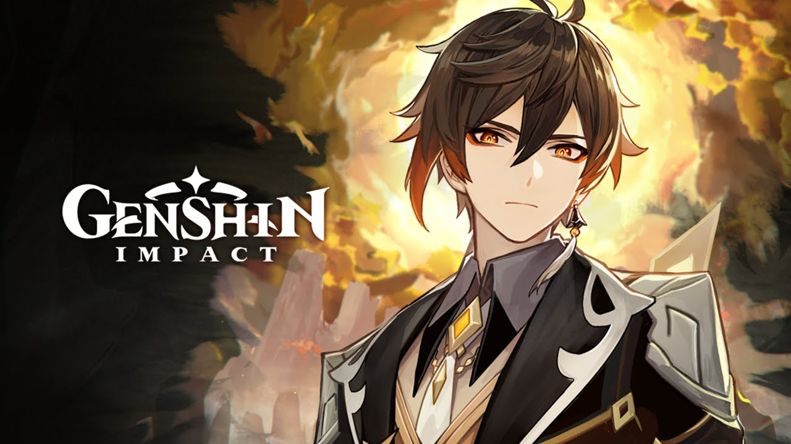

He is the current head of the Kamisato Clan, the older brother of Kamisato Ayaka, and the Yashiro Commissioner. Resourceful and cunning, Ayato keeps a low-profile instead and focuses on government affairs in the Commission, having less of a reputation than that of his sister. His actions can be unpredictable at times, with many wondering what his plans are; nevertheless, he is a household name in Inazuma.
Es el jefe del Clan Kamisato de la Comisión Yashiro, y se compromete a mantener la prosperidad y la estabilidad de la región. Además es el hermano mayor de Kamisato Ayaka.

She is the oldest daughter of the Kamisato Clan and younger sister of Kamisato Ayato,
in charge of the clan's internal and external affairs.
Being beautiful, dignified, and noble, Ayaka has earned the title Shirasagi Himegimi from those close to her,
and is considered a model of perfection in Inazuma. Having more interactions with the common people,
Ayaka's reputation exceeds that of her brother.
Ella es la hija menor del Clan Kamisato y hermana de Kamisato Ayato.
Siendo hermosa, elegante y agraciada, la gente común no tiene nada de qué hablar mal de Kamisato Ayaka.
Debido a su estatus social como la hija menor del Clan Kamisato de la Comisión Yashiro y como la Princesa Garza,
Kamisato Ayaka es vista como un modelo de perfección.